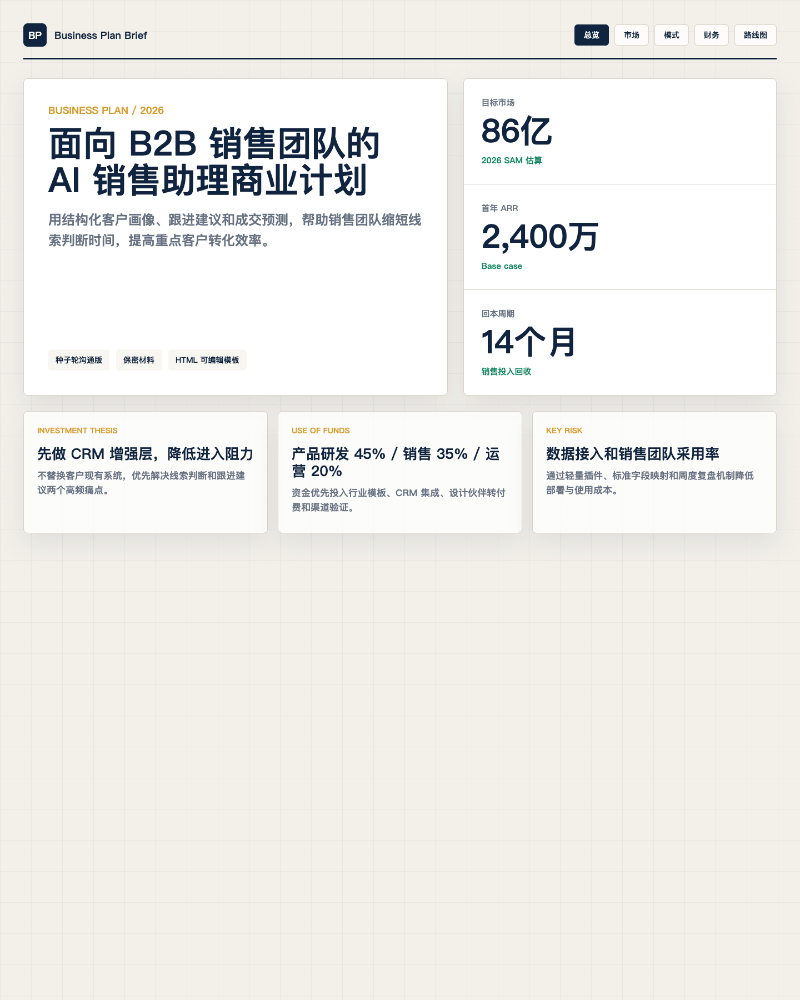

business-plan
Business Plan Brief
Formal Chinese-friendly business plan template for startup pitches, internal project proposals, and investment memos.
concisebusinessevidence-leddecision-orientedhigh
Best for: Business plans that need to explain opportunity, model, traction, financial path, team capability, and milestones in a polished report-like HTML deck.